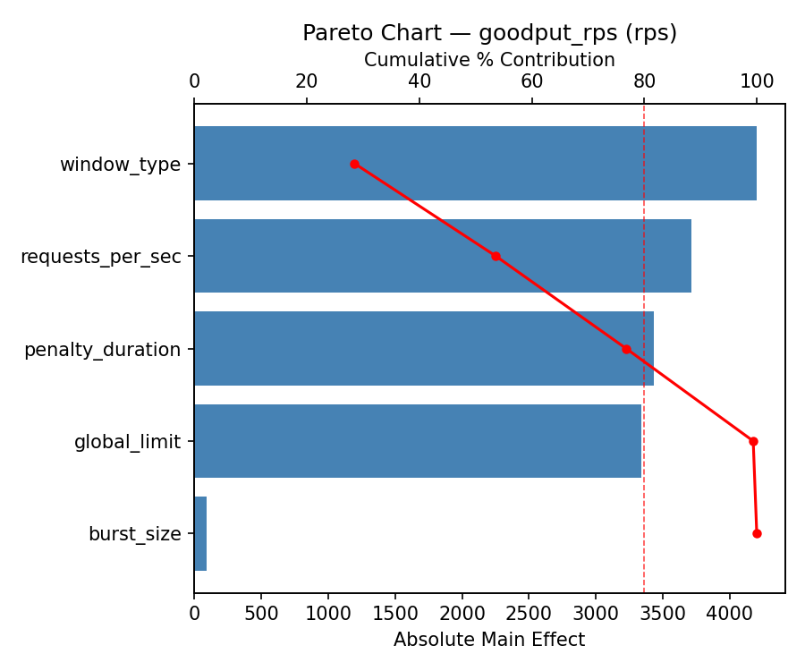
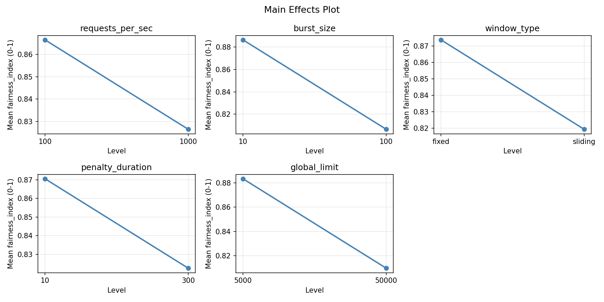
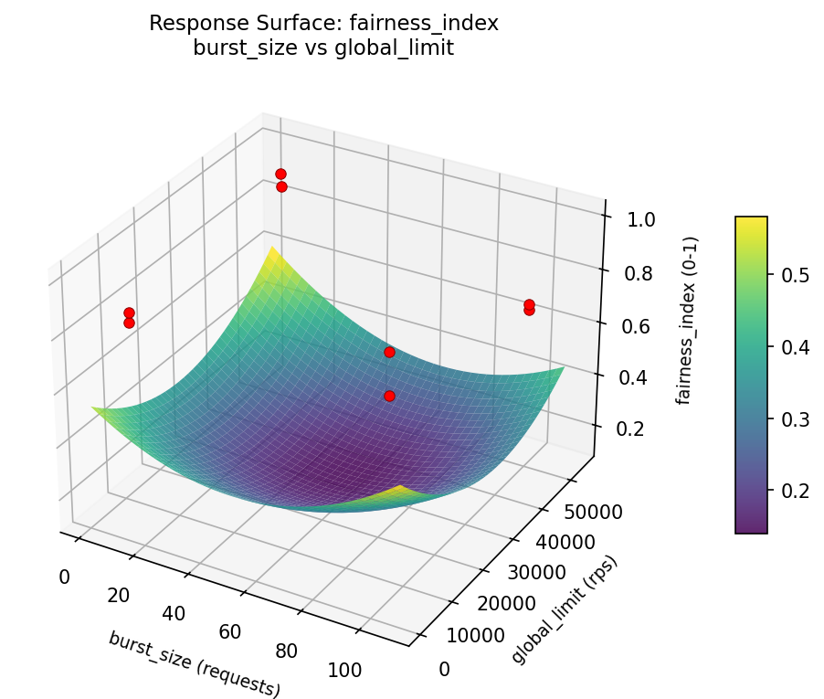
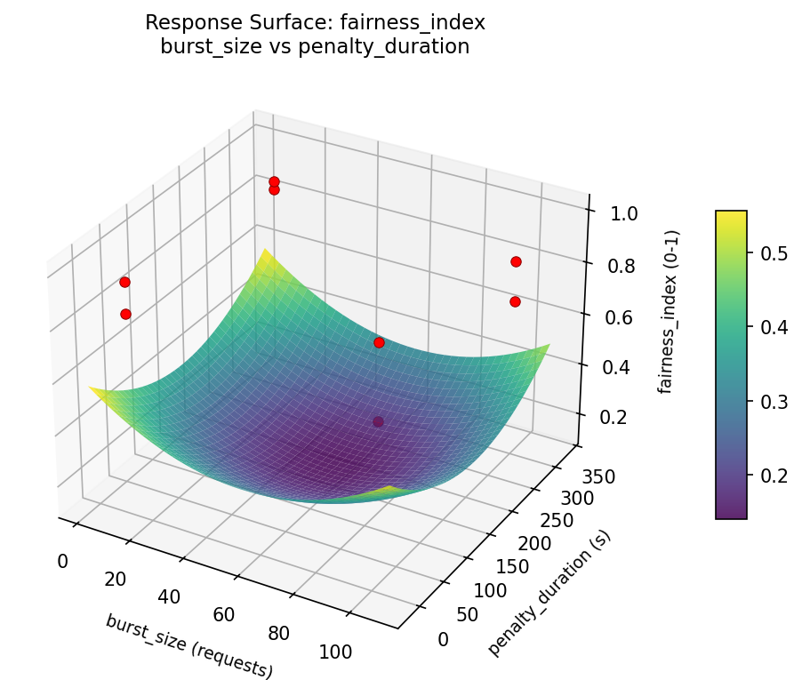
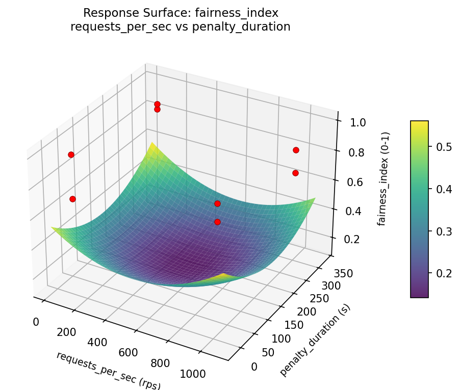
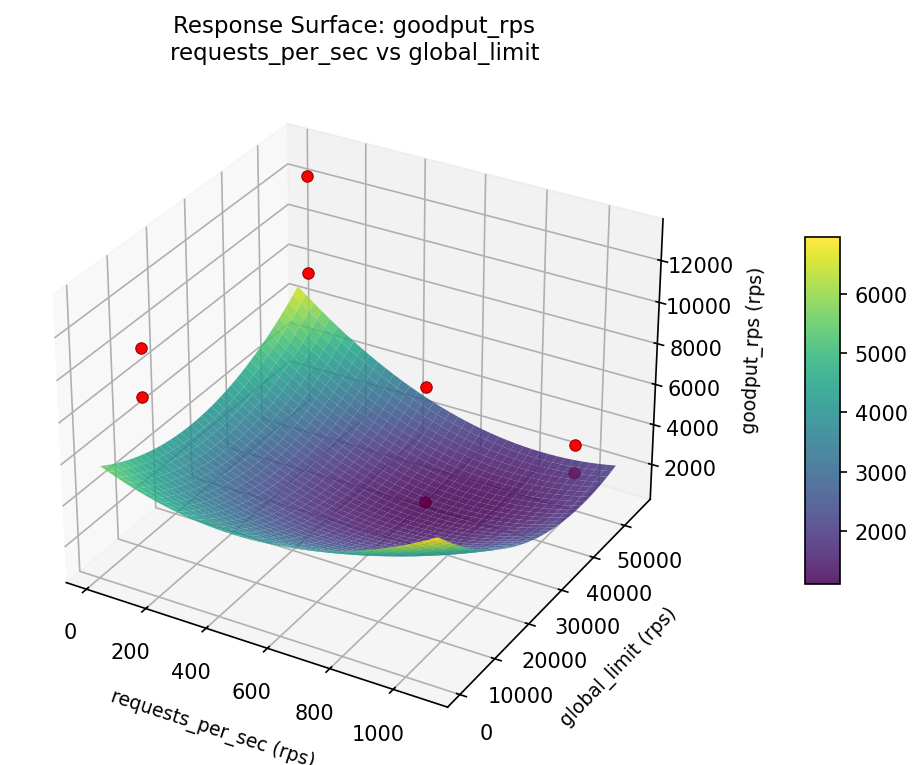
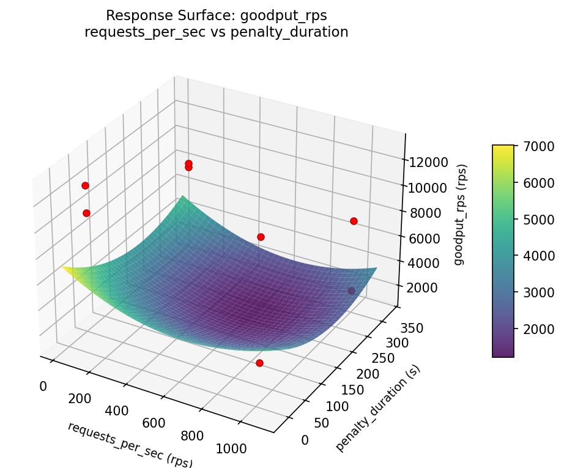

Summary
This experiment investigates api rate limiter tuning. Fractional factorial of 5 rate limiting parameters for throughput and fairness.
The design varies 5 factors: requests per sec (rps), ranging from 100 to 1000, burst size (requests), ranging from 10 to 100, window type, ranging from sliding to fixed, penalty duration (s), ranging from 10 to 300, and global limit (rps), ranging from 5000 to 50000. The goal is to optimize 2 responses: goodput rps (rps) (maximize) and fairness index (0-1) (maximize). Fixed conditions held constant across all runs include backend capacity = 20000, cache backend = redis.
A fractional factorial design reduces the number of runs from 32 to 8 by deliberately confounding higher-order interactions. This is ideal for screening — identifying which of the 5 factors matter most before investing in a full study.
Key Findings
For goodput rps, the most influential factors were window type (30.7%), penalty duration (27.1%), requests per sec (19.9%). The best observed value was 13093.0 (at requests per sec = 100, burst size = 100, window type = sliding).
For fairness index, the most influential factors were requests per sec (34.0%), window type (22.1%), burst size (21.1%). The best observed value was 0.995 (at requests per sec = 1000, burst size = 100, window type = sliding).
Recommended Next Steps
- Follow up with a response surface design (CCD or Box-Behnken) on the top 3–4 factors to model curvature and find the true optimum.
- Consider whether any fixed factors should be varied in a future study.
- The screening results can guide factor reduction — drop factors contributing less than 5% and re-run with a smaller, more focused design.
Experimental Setup
Factors
| Factor | Low | High | Unit |
|---|
requests_per_sec | 100 | 1000 | rps |
burst_size | 10 | 100 | requests |
window_type | sliding | fixed | |
penalty_duration | 10 | 300 | s |
global_limit | 5000 | 50000 | rps |
Fixed: backend_capacity = 20000, cache_backend = redis
Responses
| Response | Direction | Unit |
|---|
goodput_rps | ↑ maximize | rps |
fairness_index | ↑ maximize | 0-1 |
Configuration
{
"metadata": {
"name": "API Rate Limiter Tuning",
"description": "Fractional factorial of 5 rate limiting parameters for throughput and fairness"
},
"factors": [
{
"name": "requests_per_sec",
"levels": [
"100",
"1000"
],
"type": "continuous",
"unit": "rps"
},
{
"name": "burst_size",
"levels": [
"10",
"100"
],
"type": "continuous",
"unit": "requests"
},
{
"name": "window_type",
"levels": [
"sliding",
"fixed"
],
"type": "categorical",
"unit": ""
},
{
"name": "penalty_duration",
"levels": [
"10",
"300"
],
"type": "continuous",
"unit": "s"
},
{
"name": "global_limit",
"levels": [
"5000",
"50000"
],
"type": "continuous",
"unit": "rps"
}
],
"fixed_factors": {
"backend_capacity": "20000",
"cache_backend": "redis"
},
"responses": [
{
"name": "goodput_rps",
"optimize": "maximize",
"unit": "rps"
},
{
"name": "fairness_index",
"optimize": "maximize",
"unit": "0-1"
}
],
"settings": {
"operation": "fractional_factorial",
"test_script": "use_cases/33_api_rate_limiter/sim.sh"
}
}
Experimental Matrix
The Fractional Factorial Design produces 8 runs. Each row is one experiment with specific factor settings.
| Run | requests_per_sec | burst_size | window_type | penalty_duration | global_limit |
|---|
| 1 | 100 | 100 | fixed | 10 | 5000 |
| 2 | 1000 | 10 | sliding | 10 | 5000 |
| 3 | 1000 | 100 | sliding | 300 | 5000 |
| 4 | 1000 | 100 | fixed | 300 | 50000 |
| 5 | 100 | 100 | sliding | 10 | 50000 |
| 6 | 1000 | 10 | fixed | 10 | 50000 |
| 7 | 100 | 10 | sliding | 300 | 50000 |
| 8 | 100 | 10 | fixed | 300 | 5000 |
Step-by-Step Workflow
1
Preview the design
$ python doe.py info --config use_cases/33_api_rate_limiter/config.json
2
Generate the runner script
$ python doe.py generate --config use_cases/33_api_rate_limiter/config.json \
--output use_cases/33_api_rate_limiter/results/run.sh --seed 42
3
Execute the experiments
$ bash use_cases/33_api_rate_limiter/results/run.sh
4
Analyze results
$ python doe.py analyze --config use_cases/33_api_rate_limiter/config.json
5
Get optimization recommendations
$ python doe.py optimize --config use_cases/33_api_rate_limiter/config.json
6
Generate the HTML report
$ python doe.py report --config use_cases/33_api_rate_limiter/config.json \
--output use_cases/33_api_rate_limiter/results/report.html
Features Exercised
| Feature | Value |
|---|
| Design type | fractional_factorial |
| Factor types | continuous (4), categorical (1) |
| Arg style | double-dash |
| Responses | 2 (goodput_rps ↑, fairness_index ↑) |
| Total runs | 8 |
Analysis Results
Generated from actual experiment runs using the DOE Helper Tool.
Response: goodput_rps
Top factors: window_type (30.7%), penalty_duration (27.1%), requests_per_sec (19.9%).
Pareto Chart

Main Effects Plot

Response: fairness_index
Top factors: requests_per_sec (34.0%), window_type (22.1%), burst_size (21.1%).
Pareto Chart

Main Effects Plot

Response Surface Plots
3D surfaces fitted with quadratic RSM. Red dots are observed data points.
fairness index burst size vs global limit

fairness index burst size vs penalty duration

fairness index penalty duration vs global limit

fairness index requests per sec vs burst size
fairness index requests per sec vs global limit
fairness index requests per sec vs penalty duration

goodput rps burst size vs global limit

goodput rps burst size vs penalty duration

goodput rps penalty duration vs global limit

goodput rps requests per sec vs burst size

goodput rps requests per sec vs global limit

goodput rps requests per sec vs penalty duration

Full Analysis Output
=== Main Effects: goodput_rps ===
Factor Effect Std Error % Contribution
--------------------------------------------------------------
window_type -4202.2500 1426.6277 30.7%
penalty_duration -3714.7500 1426.6277 27.1%
requests_per_sec 2727.2500 1426.6277 19.9%
global_limit 2267.2500 1426.6277 16.5%
burst_size -796.7500 1426.6277 5.8%
=== Interaction Effects: goodput_rps ===
Factor A Factor B Interaction % Contribution
------------------------------------------------------------------------
requests_per_sec global_limit 4202.2500 16.6%
requests_per_sec burst_size -3714.7500 14.7%
burst_size global_limit 3342.2500 13.2%
window_type penalty_duration -3342.2500 13.2%
burst_size penalty_duration 2727.2500 10.8%
window_type global_limit -2727.2500 10.8%
requests_per_sec window_type -2267.2500 9.0%
burst_size window_type -1070.2500 4.2%
penalty_duration global_limit 1070.2500 4.2%
requests_per_sec penalty_duration -796.7500 3.2%
=== Summary Statistics: goodput_rps ===
requests_per_sec:
Level N Mean Std Min Max
------------------------------------------------------------
100 4 7081.5000 2409.7671 3519.0000 8709.0000
1000 4 9808.7500 5217.8610 2112.0000 13093.0000
burst_size:
Level N Mean Std Min Max
------------------------------------------------------------
10 4 8843.5000 4181.8821 3519.0000 13093.0000
100 4 8046.7500 4481.1049 2112.0000 12994.0000
window_type:
Level N Mean Std Min Max
------------------------------------------------------------
fixed 4 10546.2500 2895.8930 7726.0000 13093.0000
sliding 4 6344.0000 4222.8955 2112.0000 11036.0000
penalty_duration:
Level N Mean Std Min Max
------------------------------------------------------------
10 4 10302.5000 2205.3711 8372.0000 13093.0000
300 4 6587.7500 4891.6670 2112.0000 12994.0000
global_limit:
Level N Mean Std Min Max
------------------------------------------------------------
5000 4 7311.5000 3750.6964 2112.0000 11036.0000
50000 4 9578.7500 4527.3583 3519.0000 13093.0000
=== Main Effects: fairness_index ===
Factor Effect Std Error % Contribution
--------------------------------------------------------------
requests_per_sec -0.0840 0.0382 34.0%
window_type 0.0545 0.0382 22.1%
burst_size -0.0520 0.0382 21.1%
penalty_duration -0.0400 0.0382 16.2%
global_limit -0.0165 0.0382 6.7%
=== Interaction Effects: fairness_index ===
Factor A Factor B Interaction % Contribution
------------------------------------------------------------------------
burst_size window_type -0.1445 18.8%
penalty_duration global_limit 0.1445 18.8%
burst_size penalty_duration -0.0840 11.0%
window_type global_limit 0.0840 11.0%
burst_size global_limit 0.0735 9.6%
window_type penalty_duration -0.0735 9.6%
requests_per_sec global_limit -0.0545 7.1%
requests_per_sec penalty_duration -0.0520 6.8%
requests_per_sec burst_size -0.0400 5.2%
requests_per_sec window_type 0.0165 2.2%
=== Summary Statistics: fairness_index ===
requests_per_sec:
Level N Mean Std Min Max
------------------------------------------------------------
100 4 0.8885 0.0470 0.8400 0.9490
1000 4 0.8045 0.1426 0.6850 0.9950
burst_size:
Level N Mean Std Min Max
------------------------------------------------------------
10 4 0.8725 0.1286 0.7060 0.9950
100 4 0.8205 0.0944 0.6850 0.8990
window_type:
Level N Mean Std Min Max
------------------------------------------------------------
fixed 4 0.8193 0.0812 0.7060 0.8990
sliding 4 0.8738 0.1367 0.6850 0.9950
penalty_duration:
Level N Mean Std Min Max
------------------------------------------------------------
10 4 0.8665 0.1202 0.7060 0.9950
300 4 0.8265 0.1084 0.6850 0.9490
global_limit:
Level N Mean Std Min Max
------------------------------------------------------------
5000 4 0.8548 0.1299 0.6850 0.9950
50000 4 0.8382 0.1009 0.7060 0.9490
Optimization Recommendations
=== Optimization: goodput_rps ===
Direction: maximize
Best observed run: #4
requests_per_sec = 100
burst_size = 100
window_type = sliding
penalty_duration = 10
global_limit = 50000
Value: 13093.0
RSM Model (linear, R² = 0.9687, Adj R² = 0.8904):
Coefficients:
intercept +8445.1250
requests_per_sec -1029.8750
burst_size +3012.8750
window_type +208.1250
penalty_duration +1586.8750
global_limit +1049.3750
Predicted optimum (from linear model):
requests_per_sec = 1000
burst_size = 100
window_type = fixed
penalty_duration = 300
global_limit = 50000
Predicted value: 12856.2500
Model quality: Excellent fit — surface predictions are reliable.
Factor importance:
1. burst_size (effect: 6025.8, contribution: 43.7%)
2. penalty_duration (effect: 3173.8, contribution: 23.0%)
3. global_limit (effect: 2098.8, contribution: 15.2%)
4. requests_per_sec (effect: -2059.8, contribution: 15.0%)
5. window_type (effect: 416.2, contribution: 3.0%)
=== Optimization: fairness_index ===
Direction: maximize
Best observed run: #5
requests_per_sec = 1000
burst_size = 100
window_type = sliding
penalty_duration = 300
global_limit = 5000
Value: 0.995
RSM Model (linear, R² = 0.2959, Adj R² = -1.4643):
Coefficients:
intercept +0.8465
requests_per_sec +0.0187
burst_size +0.0033
window_type -0.0252
penalty_duration +0.0450
global_limit -0.0000
Predicted optimum (from linear model):
requests_per_sec = 1000
burst_size = 100
window_type = fixed
penalty_duration = 300
global_limit = 50000
Predicted value: 0.9387
Model quality: Weak fit — consider adding center points or using a different design.
Factor importance:
1. penalty_duration (effect: 0.1, contribution: 48.8%)
2. window_type (effect: -0.1, contribution: 27.4%)
3. requests_per_sec (effect: 0.0, contribution: 20.3%)
4. burst_size (effect: 0.0, contribution: 3.5%)
5. global_limit (effect: 0.0, contribution: 0.0%)